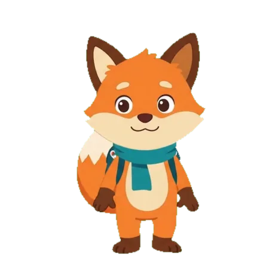

Ruta adaptativa
Personalización
Cuestionario inicial y mapa por niveles
Al registrarte, evaluamos tu experiencia y tu ritmo diario para armar una ruta serpenteante paso a paso o un plan a tu medida.
¡Hola! Soy Tito. Baja conmigo para descubrir tu ruta en Lengua de Señas Colombiana.

TUTOR INTERACTIVO DE LENGUA DE SEÑAS COLOMBIANA CON VISIÓN ARTIFICIAL QUE RESPONDE A TUS MANOS EN TIEMPO REAL.
Desliza hacia abajo · Tito te acompañaDesliza para descubrir cómo Manitas transforma el aprendizaje de lengua de señas en una experiencia gamificada e inteligente.
Al registrarte, evaluamos tu experiencia y tu ritmo diario para armar una ruta serpenteante paso a paso o un plan a tu medida.
Alterna entre demostraciones de persona real LSC y animaciones, mientras el radar valida dedo por dedo si tu postura es exacta.
En el Modo Examen se ocultan el video y las ayudas: solo ves la palabra pedida y el cronómetro frente a tu cámara.
Cada nodo desbloquea la siguiente lección cuando tu cámara valida el gesto al 100%.
Feedback instantáneo de ángulos articulares y trayectorias en pantalla.
Sin video de referencia ni pistas escritas. Demuestra la seña frente a tu cámara antes de que termine el tiempo.
Tu cámara web se analiza localmente en el navegador con WebGL y el tutor corre directo en tu equipo, garantizando privacidad absoluta y respuesta instantánea.
Cada seña, trayectoria y punto anatómico corresponde al corpus oficial de Lengua de Señas Colombiana de la Universidad Tecnológica de Pereira.
Tu progreso guarda cada seña dominada, tu racha diaria y tus calificaciones reales en los exámenes sin video guía.

Crea tu cuenta, responde un test de nivel de 3 preguntas y Tito IA arma tu ruta.